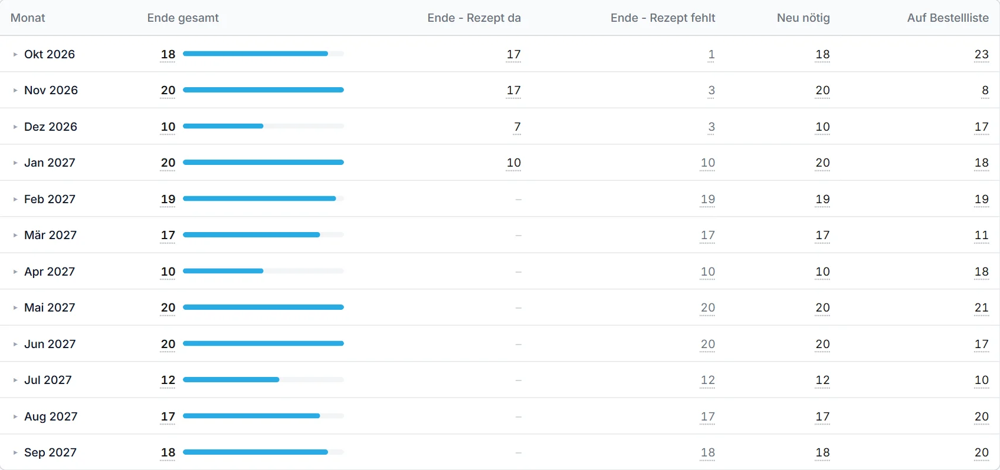
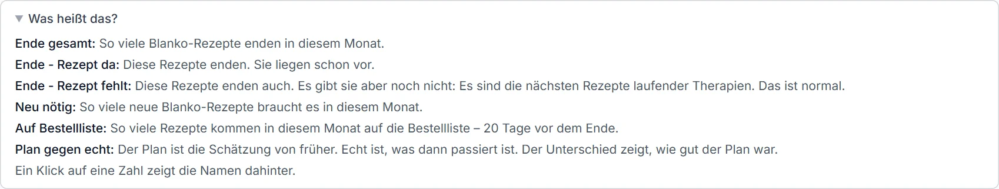
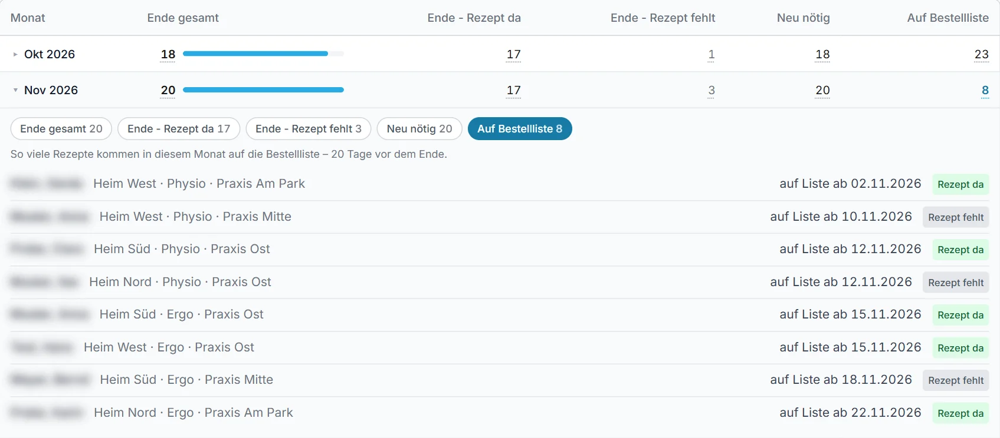
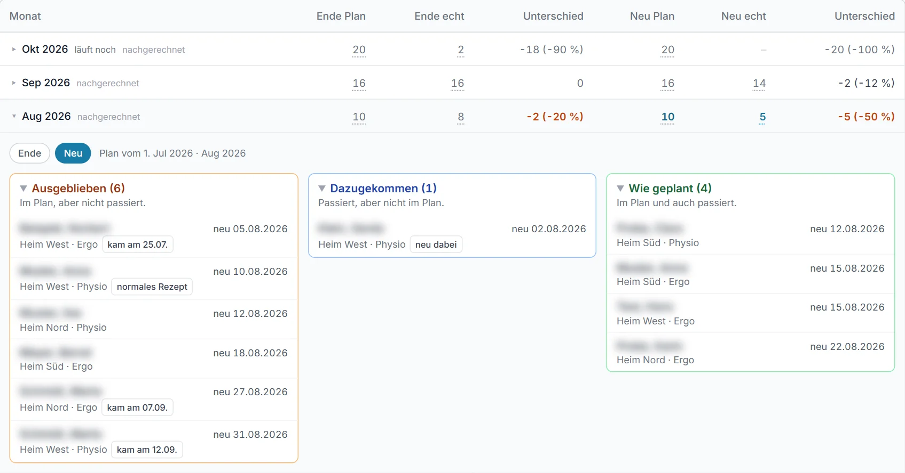

Der Kalender zeigt die Blanko-Rezepte der nächsten Monate. Er sagt, wann welche enden. Er sagt auch, wie viele neue nötig sind. So ist früh klar, wie viel Arbeit kommt.
Ein Blanko-Rezept gilt 16 Wochen. Danach endet es. Läuft die Therapie weiter? Dann braucht es ein neues Rezept.
Der Kalender zählt nur Heimpatienten in Therapie. Er zeigt jeden Monat bis zum nächsten März oder September.
Manche Rezepte gibt es noch gar nicht. Der Kalender rechnet sie trotzdem mit. Er nimmt an: Die Therapie läuft weiter.
Jede Zeile ist ein Monat. Jede Spalte zählt etwas anderes.

Die Bilder zeigen erfundene Zahlen.
Über der Tabelle steht „Was heißt das?“. Ein Klick darauf öffnet die Erklärung. Die Maus über einem Spaltenkopf zeigt sie auch.

Jede Zahl ist unterstrichen. Ein Klick darauf öffnet den Monat. Darunter stehen die Patienten hinter dieser Zahl.
Oben im Monat stehen alle Spalten als Knöpfe. Ein Klick wechselt die Liste. Ein Klick auf den Namen öffnet die Akte.

Hier ist „Auf Bestellliste“ gewählt. Jede Zeile nennt den Tag für die Bestellliste.
Das System speichert an jedem Monatsersten einen Plan. Später vergleicht es den Plan mit der Wirklichkeit.
„Plan von vor“ wählt den Abstand: 1, 3 oder 6 Monate. Ein weiter Abstand ist der strengere Test.
| Spalte | Was steht da? |
|---|---|
| Ende Plan | So viele Rezepte sollten laut Plan enden. |
| Ende echt | So viele Rezepte sind wirklich zu Ende gegangen. |
| Neu Plan | So viele neue Rezepte sollten laut Plan kommen. |
| Neu echt | So viele neue Rezepte sind wirklich gekommen. |
| Unterschied | Echt minus Plan. Plus heißt: mehr als geplant. Minus heißt: weniger als geplant. Orange heißt: ein Fünftel oder mehr daneben. |
Ein Klick auf eine Zahl öffnet den Monat. Die Knöpfe „Ende“ und „Neu“ wechseln die Sicht. Drei Kästen sortieren die Patienten:
Im Plan, aber nicht passiert.
Passiert, aber nicht im Plan.
Im Plan und auch passiert.

Oft kennt das System den Grund. Dann steht er als kleines Schild neben dem Namen.
| Schild | Was heißt das? |
|---|---|
| Therapie beendet | Der Patient ist heute im Archiv oder Bewohner. |
| verstorben | Der Patient ist verstorben. |
| Blanko entzogen | Jemand hat das Blanko aus dem Kalender genommen. |
| kam am 12.09. | Das Rezept kam, nur in einem anderen Monat. |
| geplant 03.11. | Der Plan hatte einen anderen Monat. Das Rezept kam früher oder später. |
| normales Rezept | Der Arzt hat ein normales Rezept ausgestellt. Das Blanko fehlt deshalb. |
| neu dabei | Der Patient hatte vorher kein Blanko. Der Plan kannte ihn noch nicht. |
| war nicht in Therapie | Zum Plan war der Patient nicht in Therapie. |
Kein Schild heißt: Der Grund ist unklar. Das System rät nicht.
Der Vergleich zeigt, wie gut der Plan ist. Stimmt der Plan oft? Dann taugt er für die Planung.
Die Namen zeigen den Grund für jeden Unterschied. Vielleicht fehlt ein Rezept beim Arzt. Vielleicht ist eine Therapie zu Ende. Beides lässt sich dann gezielt klären.
„Nachgerechnet“ neben einem Monat heißt: Das System hat den Plan später berechnet. So hätte er damals ausgesehen. Rezepte gibt es im System erst ab Juli 2026.